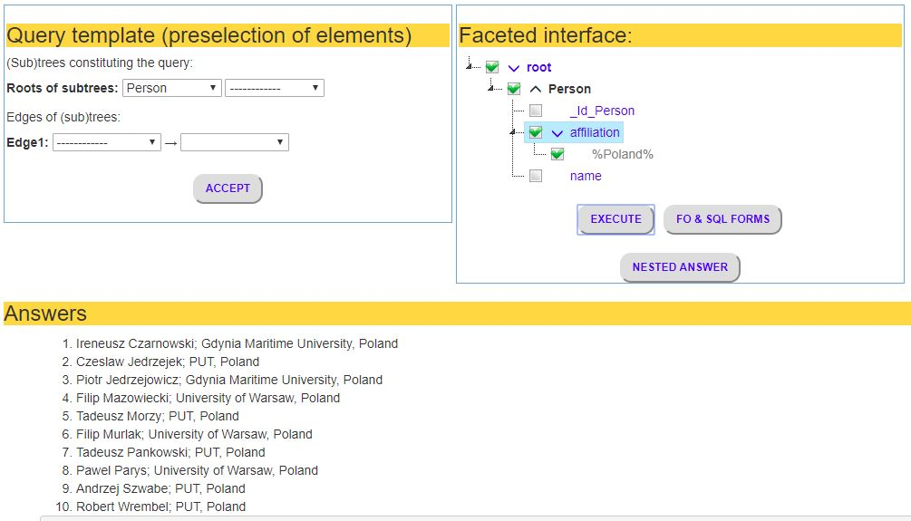
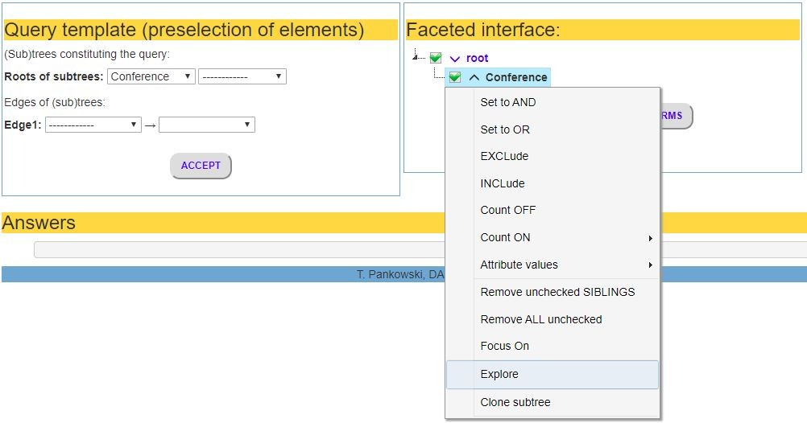

Query 1: Get all persons (without any restriction)

Formulating faceted query
-
Providing a query templata, a (sub)tree of classes
A user starts giving a class of answers (the root of the query template tree). In the considered case, each answer will be of the class Person. Since no restriction is necessery, the query template is a tree reduced to the root.
-
Creating a faceted query
After ACCEPT, a faceted interface determined by the provided query template tree is created. The set of answers is produced in responce to "EXECUTE". On the bottom of the figure, ten first answers is shown, ordered by the surname. The button "FO & SQL FORMS" invokes a new window showing first order forms of the created faceted query, as well as its SQL form (see below).
-
Coloring convention, conjunctive and disjunctive sets
A faceted interface (and also faceted queries as special forms of faceted interfaces) are AND/OR trees. Each node is the root of a (sub)tree. If a node is accompanied with the AND sign (a cap), the node is interpreted as an AND node. Additionaly, AND nodes have the black color. Otherwise, the node is an OR node and has the blue color. By default, attributes are understood as OR nodes. To be an AND node meens that the set ot its childs is a conjunctive set. Similarly, children of an OR node constitute a disjunctive set. The context menu can be used to set AND/OR to a node.
At the beggining, all nodes labeled by classes (by unary predicates) are AND nodes, and all nodes labeled by properties (by binary predicates) are OR nodes. The root node, labeled by "root", is an OR node.

Inspecting semantic of faceted queries
-
Semantic of faceted queries
Semantics of a faceted query may not be obvious. To specify the semantics precisely, a first order form of the faceted query is provided (as two syntactic trees).
In the "before rewriting" form, only names used in the faceted query are present. In "after rewriting" form, all intensional predicates are rewritten into extensional ones.
The semantics of queries conforms to the semantics of description logic.
-
First order queries: before and after rewriting
In this case, the FOL query is: Person(x). Person is an extensional predicate, so no rewriting is needed.
-
SQL query
The rewritten form of the query is transformed into SQL. The SQL query is executed by the relational database engine.
Query 2: Persons with a given affiliation. Using context menu

-
Invoking the context menu
Right click on a node displays the context menu.
-
Operations controlled by the context menu: "Attribute value"
"Attribute value" allows to insert a new value of the indicated attribute, as well as edit or delete the attribute value. Stored values can be read from the underlying database: "From database". A new value can be added manually by a user: "Add new value node". The user can edit the indicated value: "Edit value", or delete the value: "Delete value node".

Selecting from a list of values read from a database
-
List of available values
The user is provided with a check list of values of the indicated attribute stored in the database and satisfying the current state of the created faceted query
-
Checking values
The user selects a set of values checking them. The set is interpreted as a disjunctive set.

Removing unnecessary nodes
-
Remove ALL unchecked
This options removes all unchecked nodes from the created faceted query

The final form of the created faceted query

First order semantics of the query and its SQL form
Query 3: Persons with an affiliation defined by a pattern
-
Add new node - inserting an attribut value as a pattern of the form %xxxx%
This menu option allows for inserting a value of the indicated attribute manually. The value can be a pattern of the form %string% meaning that we are interested in values containing "string" as a substring. In this case, all affiliations with the substring "Poland" satisfy the restriction.

First order semantics of the query and its SQL form
Query 4: UNION of ACM conferences and DEXA conferences

-
Query template
In this case, the query template is a forest of two trees. Each tree consists only of a root, respectively, ACMConf and DEXAConf.
-
Disjunctive set of children of "root"
By default, "root" is an OR node and its children constitute a disjunctive set. Thus, the faceted interface represents the disjunction: ACMConf OR DEXAConf.

First order semantics of the query and its SQL form
-
First order forms
Now, the two first order forms: before rewriting and after rewriting differ substantially. It follows from the fact that ACMConf is an intensional binary predicate defined as a specialization of Conference derived by a value (this value has a form of pattern %ACM%). Similarly for DAXAConf.
Query 5: Persons connected with an ACM or a DEXA conference

-
Query template
The query template is a tree rooted in Person. The tree has two edges (Person, ACMConf) and (Person, DEXAConf).
-
Disjunctive set of children of "authorConf"
In the faceted interface implied by the query template tree, Person is connected with ACMConf and/or DEXAConf via the object property authorConf. By default, authorConf is an OR node and its children constitute a disjunctive set. Thus, the faceted query is interpreted as the query: Person(authorConf(ACMConf OR DEXAConf)).
Note, that authorConf connects a person with a conference if a paper written by this person was presented at this conference.

First order semantics of the query and its SQL form
-
First order forms
Now, the predicates: authorConf, ACMConf and DEXAConf, are intensional predicates. The FO form after rewriting takes these rewritings into consideration.
-
Variables
Note, that each valuation of x1 must satisfy at least one predicate ACMConf or DEXAConf (FO before rewriting).
Query 6: Persons connected with an ACM and a DEXA conference (incorrect!)

-
Changing a disjunctive set authorConf children into a conjunctive one
The OR node authorConf (in the previous example) could be changed into the AND node. Then the set of its children is changed to a conjunctive set. Now, authorConf connects persons with ACM and DEXA conferences. However, it is incorrect since there is no a conference that is both an ACM and DEXA conference. This is clear from the first order semantics shown in the next figure.
This example illustrates the inconsistency between natural language semantics and the formal (first order) semantics.

First order semantics of the query and its SQL form
-
Variables
Note that the variable x1 must satisfy both ACMConf and DEXAConf (FO before rewriting). This never happens, so the query is semantically incorrect.
Query 7: Persons connected with an ACM and a DEXA conference (correct! by cloning)

-
Cloning the subtree rooted in authorConf
First, we clone a subtree rooted in authorConf. This can be done using the context menu. The option "Clone subtree" duplicates the tree rooted in the indicated node.

Modifying the cloned subtrees
-
A subtree indicating connections with ACM conferences
We leave ACMConf in the first subtree
-
A subtree indicating connections with DEXA conferences
We leave DEXAConf in the other subtree
-
Semantics as expected
Since Person is an AND tree, its two children constitute a conjunctive set. This expresses the correct semantics of the query.

First order semantics of the query and its SQL form
-
Variables
Now, the variable x, denoting a person, is connected with two variables: x1 denoting ACMConf and x2 denoting DEXAConf. The AND connection indicates that x must be connected with these two conferences. And this expresses correctly the expected semantics of the query.
Query 8: Persons connected with ACM conferences in the USA

-
Changing the authorConf from OR to AND
We start with the query template being a tree with the root Person and two edges leading to ACMConf and USAConf, respectively. The proposed faceted interface is an OR/AND tree, in which there is an OR node authorConf. We use the first position with the context menu, "Set to AND", to change the node authorConf to AND node.
The final form of the faceted query.

First order semantics of the query and its SQL form.
Query 9: People connected with at least five ACM conferences in the USA. Count() restriction

-
Defining count() restriction
From the context menu the option "Count ON" is chosen. Next, from a submenu the appropriate position is selected, and the value of k (5 in this case) is given. Note, that the count() restriction is defined with respect to the property node labeled authorConf. The meaning is: a domain value, say a person x, of authorConf must be connected by authorConf with more than 5 distinct values of x1, where x1 denotes elements from the range class of authorConf (i.e., from the Conference class, in the considered example).

The final form of the faceted query.

-
First order semantics of the query and its SQL form.
The information about a count restriction is given by [count(x1) > 5] labeling the formula Person(x). According to this, we accept such valuations of x which are connected in the ontology with more than 5 different valuation of x1 satisfying the query.
Query 10: People connected with at least five ACM conferences but NOT in the USA

-
Negation by excluding USAConf
Negation of the formula represented by a subtree, is realized by excluding (negating) this subtree. So, to negate a subtree, the EXCLude option is selected from the context menu.

-
The final form of the faceted query
The exclusion (negation) is denoted by the cross sign proceding the root of the subtree.
-
First order semantics of the query and its SQL form.
The information about a count restriction is given by [count(x1) > 5] labeling the formula Person(x). According to this, we accept such valuations of x which are connected in the ontology with more than 5 different valuation of x1 satisfying the query.
Query 11: People with articles at conferences at which they were members of program committees. Cycle

-
Cycle template
A template of a cycle query is a tree, in which there is a sequence of edges constituting a cycle. It means, that the first edge begins with the same class as the last edge ends. In the considered example, the first edge is (Person, Conference), and the last is (Conference, Person). So, these two edges create a cycle.
-
Defining a cycle query
A faceted interface created on the basis of a cycle template, contains a sequence of nodes constituting a cycle. A special meaning have identifiers of classes beginning and ending the cycle. Identifiers are attributes of the form "_Id_class". To define a cycle, the user introduces the same variable of the form "@x" to the first and the last identifier in the cycle.
First order semantics of the query and its SQL form.
-
First order form before rewriting
The class beginning the cycle is labeled by an equality indicating identity of variable valuations. This equality follows from the restrictions concerning identifiers. In our example: the identifier of the object x must be equal to the identifier of the object x3. This implies the equality: x = x3.
-
First order form after rewriting
In this form, informations about equality betwee identifiers is ommitted.
The information about a cycle is given by [x = x3] labeling the formula Person(x). According to this, we accept such valuations of x which are connected in the ontology with such a valuation of x3 that is the same as the valuation of x, and satisfies the query.
Query 12: PUT authors connected with DEXA conferences. Nested answer

-
Defining the query
The tree-shaped form of the query can be used as a template of a nested form of the answer. Then, after completion of the query, the button "NESTED ANSWER" is pressed. In response, a nested answer is displayed in a separate window.

Nested form of the answer.
Now, a user can expand/collapse nodes of the nested answer.
Query 13: PUT authors connected with DEXA conferences, and inversely. Refocussing

-
Refocussing
The query in the figure asks about PUT authors (authors from Poznan University of Technology) who are connected with DEXA conferences. If a user wants to know what these conferences are (i.e., all DEXA conferences connected with PUT authors), she/he can use the refocussing (or pivoting) functionalty.
The refocussing is realized by means of the option "Focus On" in the context menu.
Result of refocussing
The result of refocussing is a faceted query rewritten in such a way that: (a) answers are objects from the class the user wants to focus on (i.e., DEXAConf in our example), (b) the set of answers is the same as the set of objects of the same class befor rewriting.
In the considered example, the set of DEXA conferences involved in the query before and after refocussing are the same.
Nested answer to the query after refocussing
The set of DEXA conferences constituting answers to the considered query after refocussing. Now, a user can expand/collapse nodes of conferences exploring information about PUT authors connected to these conferences.
Query 14: Explore the context of a class in the ontology
-
Exploring
The query in the figure asks about all conferences. If a user wants to know the context of this class in the ontology (i.e., all properties having the class Conference as their domain or range) she/he can use the exploring functionalty.
The exploring is realized by means of the option "Explore" in the context menu.

Result of exploring
The result of exploring is a faceted interface expanded with all posible subtrees which roots could be children of the explored node. The information is also provided how many objects from the expanded class is connected to the considered class in a particular subtree.

Selection based on exploring information
In this figure, the user decided to ask about conferences at which DB papers (i.e., papers concerning databases) were presented. According to the provided information, the answer will have 281 objects.